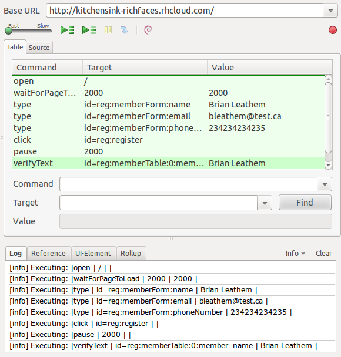

Testing JSF applications
with Arquillian and Selenium
- Brian Leathem and Lincoln Baxter, III
- Senior Software Engineers, Red Hat
- JavaOne 2012 - San Francisco
- 2012-09-04
The plan
- Brief Review of back-end testing
- How to test the front-end with Selenium
- Beyond Selenium with Arquillian Extensions

Who are we?
- Senior Software Engineers at Red Hat
- RichFaces and Forge Project Leads
- Represent Red Hat on the JSF 2.2 EG (JSR-344)
Who's behind all this?
|
|
|
|
|
|
|
|
|
|
|
Who are you?

- Who currently develop web applications with JSF?
- Who are using Arquillian to test their application logic?
- Who are using Selenium to test their application front-end?
Back-end testing

A well understood problem
Back-end testing | Unit tests
JUnit / TestNG
- Easy to test self-contained logic
- Mocks allow us to extend unit tests further
Back-end testing | "Real" tests
"Real tests"
- Test code in-container
- No "surprises" in production
Enter Arquillian
Don't mock me!
- Bring the container to the test
- Micro-deployments
Example | GreeterTest
Hello
World!
- Basic Arquillian test
- Demonstrate @Inject
- Introduce Shrinkwrap
GreeterTest | The Bean
public class Greeter {
private PhraseBuilder phraseBuilder;
@Inject
public Greeter(PhraseBuilder phraseBuilder) {
this.phraseBuilder = phraseBuilder;
}
public void greet(PrintStream to, String name) {
to.println(createGreeting(name));
}
public String createGreeting(String name) {
return phraseBuilder.buildPhrase("hello", name);
}
}GreeterTest | Injection
public class PhraseBuilder {
private Map<String, String> templates;
public String buildPhrase(String id, Object... args) {
return MessageFormat.format(templates.get(id), args);
}
@PostConstruct
public void initialize() {
templates = new HashMap<String, String>();
templates.put("hello", "Hello, {0}!");
}
}GreeterTest | Test
@RunWith(Arquillian.class)
public class GreeterTest {
@Deployment
public static JavaArchive createDeployment() {
JavaArchive jar = ShrinkWrap.create(JavaArchive.class)
.addClasses(Greeter.class, PhraseBuilder.class)
.addAsManifestResource(EmptyAsset.INSTANCE, "beans.xml");
return jar;
}
@Inject
Greeter greeter;
@Test
public void should_create_greeting() {
Assert.assertEquals("Hello, Earthling!",
greeter.createGreeting("Earthling"));
}
}The Magic
-
POM Dependencies
- Arquillian
- JUnit | TestNG
- Deployment Container
-
Arquillian.xml
- Configuration of the test container
GreeterTest | POM
<profile>
<id>arquillian-jbossas-managed</id>
<dependencies>
...
<dependency>
<groupId>org.jboss.as</groupId>
<artifactId>jboss-as-arquillian-container-managed</artifactId>
<version>7.1.1.Final</version>
<scope>test</scope>
</dependency>
<dependency>
<groupId>org.jboss.arquillian.protocol</groupId>
<artifactId>arquillian-protocol-servlet</artifactId>
<scope>test</scope>
</dependency>
</dependencies>
</profile>Demo Time
Front-end Testing
Ideal: Pyramid of test coverage
Reality: Ice-cream Cone of test coverage
Howto increase automated test coverage?
- Unit tests of GUI code -- lots of mocks!
- Let's focus on real-tests
Real tests → real browsers

|

|
|

|

|

|

|

|
Selenium
Selenium automates browsers. That's it.

WebDriver API:
- Unified API for all browsers
- Headless tests via HtmlUnit
Selenium | API
WebDriver
Represents the web browser
-
Methods:
- .get()
- .findElement(By)
Selenium | API
WebElement
Represents an HTML element.
-
Methods:
- .click()
- .sendKeys()
- .getText()
- .findElement(By)
WebElement Lookup
Selenium/WebDriver programmatic API:
WebElement username
= driver.findElement(By.id("username"))Alternative @FindBy annotation:
@FindBy(id="username")
WebElement username;
...
PageFactory.initElements(driver, this);- By.ByClassName, By.ByCssSelector, By.ById, By.ByLinkText, By.ByName, By.ByPartialLinkText, By.ByTagName, By.ByXPath, ByChained, ByIdOrName
Selenium IDE - Easy!
- Easy to write/record tests
- Replay tests against all browsers
Example | Selenium
Selenium
IDE

Selenium Ex. | The Test
public class SeleniumTest {
private WebDriver driver;
private String baseUrl;
private StringBuffer verificationErrors = new StringBuffer();
@Before
public void setUp() throws Exception {
driver = new FirefoxDriver();
baseUrl = "http://kitchensink-richfaces.rhcloud.com/";
driver.manage().timeouts().implicitlyWait(30, TimeUnit.SECONDS);
}
@Test
public void test() throws Exception {
driver.get(baseUrl + "/");
driver.findElement(By.id("reg:memberForm:name")).clear();
driver.findElement(By.id("reg:memberForm:name")).sendKeys("Brian Leathem");
driver.findElement(By.id("reg:memberForm:email")).clear();
driver.findElement(By.id("reg:memberForm:email")).sendKeys("bleathem@test.ca");
driver.findElement(By.id("reg:memberForm:phoneNumber")).clear();
driver.findElement(By.id("reg:memberForm:phoneNumber")).sendKeys("234234234235");
driver.findElement(By.id("reg:register")).click();
Thread.sleep(2000);
try {
assertEquals("Brian Leathem", driver
.findElement(By.id("reg:memberTable:0:member_name")).getText());
} catch (Error e) {
verificationErrors.append(e.toString());
}
}
@After
public void tearDown() throws Exception {
driver.quit();
String verificationErrorString = verificationErrors.toString();
if (!"".equals(verificationErrorString)) {
fail(verificationErrorString);
}
}
}Demo Time
Selenium - Problems!
Not enough abstraction, Highly repetitive
→ Maintenance problem
- Tests focus against state transitions
- Test only DOM/CSS expressed directly in the test
Automating Client-side testing
- Deploy the app, run the tests!
Container lifecycle
Ike has us covered!
- Startup/shutdown the container
- Create the testable archive
- Deploy the application
Client lifecycle?
- Start / Stop the Browser
Arquillian Extensions
- Arquillian Drone
- Brings the browser to the test
- Arquillian Graphene
- Selenium integration and extension
- Arquillian Warp
- Testing on both sides of the request
Arquillian Drone
Manages the browser life-cycle
Arquillian Drone
-
Integrates with:
- Selenium/Webdriver
- Arquillian Graphene
@Drone
WebDriver browser<extension qualifier="webdriver">
<property name="browserCapabilities">chrome</property>
</extension>Separation of concerns
Devs focus: Author tests
QA focus: Automate tests
Example | Google Drone Test
- Simple Drone test
- Demonstrate @Drone
Google Drone Test | Test
@RunWith(Arquillian.class)
public class GoogleDroneTest {
@Drone
WebDriver browser;
@Test
public void testOpeningHomePage() {
browser.get("http://www.google.com/");
List<WebElement> elements = browser.findElements(
By.xpath("//span[contains(text(), 'Google Search')]"));
Assert.assertTrue("Page not loaded", elements.size() > 0);
}
}Demo Time
Arquillian Graphene
Selenium Arquillian-Style
- Arquillian integration starts with Drone and the instantiation of the WebDriver instance.
- Graphene then takes new instance of WebDriver's browser session and store is in its Thread Local Context.
- Graphene also wraps the WebDriver instance in order to intercept calls.
Graphene 1.0
- GrapheneSelenium class
- type-safe Selenium class for Selenium 1.x
@Drone
GrapheneSelenium browser;Graphene 2.0
- More Injection
- More Abstractions
- More Extensions
Page Abstractions
Encapsulate DOM elements behind a custom API
Selenium | Page objects
- A class that encapsulates the behaviour of a page
Selenium | LoginPage
public class LoginPage {
private final WebDriver driver;
public LoginPage(WebDriver driver) {
this.driver = driver;
}
public HomePage loginAs(String username, String password) {
driver.findElement(By.id("username")).sendKeys(username);
driver.findElement(By.id("passwd")).sendKeys(password);
driver.findElement(By.id("login")).submit();
return new HomePage(driver);
}
}Selenium | Page Instantiation
Selenium PageFactory class instantiates Page Objects:
LoginPage loginPage =
PageFactory.initElements(driver, LoginPage.class);Graphene | Page Injection
Graphene test enrichment manages the PageFactory
@Page
LoginPage loginPage@FindBy(id="username")
WebElement username;Graphene | Page Fragments

- Page Objects ++
- Encapsulate the behaviour of a page fragment
@FindBy(css=".calendar")
CalendarFragment calendar;Abstraction FTW!
Single place to update WebDriver code
when the underlying DOM changes
Waiting...
Simplest case:
Thread.sleep(2000);Selenium provides the WebDriverWait class
WebElement myDynamicElement = (new WebDriverWait(driver, 10))
.until(new ExpectedCondition<WebElement>(){
@Override
public WebElement apply(WebDriver d) {
return d.findElement(By.id("myDynamicElement"));
}});More boiler plate!
Graphene wait helpers
| Helper | Description | Timeout |
|---|---|---|
| waitGui() |
waits for a short time
eg. wait for client-side operations |
1 |
| waitAjax() |
waits for longer time
eg. wait for simple ajax request |
2 |
| waitModel() |
waits for a long time
eg. wait for database requests |
5 |
Wait helper Usage
By id = By.id("button");
WebElement element = driver.findElement(id);
...
waitModel(element(id).isVisible));
...
waitModel(element(element).not().textContains("blahblah"));
...
waitModel(attribute(id, "value").valueContains("blahblah"));
...
waitModel(attribute(element, "value").not().valueEquals("blahblah"));Request guards
Blocks the Selenium test execution until a network communication caused by a given action ends
- guardHttp(button).click();
- blocks on HTTP
- guardXhr(button).click();
- blocks on XHR (Ajax)
Request guard | Usage
@RunWih(Arquillian.class)
public class TestClass {
@FindBy(id="http")
private WebElement httpButton;
@FindBy(id="xhr")
private WebElement xhrButton;
@Test
public void testSimple() {
guardHttp(httpButton).click();
guardXhr(xhrButton).click();
}
}Javascript Interfaces
Execute JavaScript from your Java test
@JavaScript("javascriptObject")
@Dependency(sources = {"file.js"})
public interface Background {
void voidMethod(String color);
String someFunction();
}Example | Javascript Interface
- Manipulate the DOM
- Bi-directional communication
Example | Javascript Interface
BackGround.java:
@JavaScript("myBackground")
@Dependency(sources = {"background.js"})
public interface Background {
void setBackground(String color);
String getBackground();
}background.js:
myBackground = {
setBackground : function (color) {
document.body.style.background = color;
},
getBackground : function () {
return document.body.style.background;
}
}Example | Javascript Interface
@RunWith(Arquillian.class)
public class JavaScriptTest {
@Drone
WebDriver browser;
@Test
public void testOpeningHomePage() throws Exception {
browser.get("http://www.google.com/");
Background background = JSInterfaceFactory.create(Background.class);
System.out.println(String.format(
"Background color is: %s", background.getBackground()));
background.setBackground("red");
System.out.println(String.format(
"Background color is: %s", background.getBackground()));
Thread.sleep((2000));
background.setBackground("");
System.out.println(String.format(
"Background color is: %s", background.getBackground()));
Thread.sleep((2000));
}
}Demo Time
Page Extensions
Automatically include Javascript Interfaces in your tests
Simply:
- Implement an interface
- Register the extension
See the docs...
https://docs.jboss.org/author/display/ARQGRA2/Page+ExtensionsRequest Guards | Impl
@JavaScript(value = "Graphene.Page.RequestGuard")
@Dependency(sources = "Graphene.Page.RequestGuard.js",
interfaces=XhrInterception.class)
public interface RequestGuard extends InstallableJavaScript {
/**
* @return the last request type
*/
RequestType getRequestDone();
/**
* Clears the request type cache and returns the last
* request type
* @return the last request type
*/
RequestType clearRequestDone();
}Interceptors with Graphene
Work is in progress to port the Graphene 1 interceptor API to Graphene 2
- Code executed around each WebDriver invocation
- Cross-cutting concerns
https://issues.jboss.org/browse/ARQGRA-79
- execute code before/after the selenium command will be performed
- catch exceptions thrown when performing selenium command
Example | LoginScreen
- Graphene Test
- Demonstrate Page Fragments
LoginScreen | Deployment
public class Deployments {
public static final String WEBAPP_SRC = "src/main/webapp";
public static WebArchive getLoginScreenDeployment() {
return ShrinkWrap.create(WebArchive.class, "login.war")
.addClasses(Credentials.class, User.class, LoginController.class)
.addAsWebResource(new File(WEBAPP_SRC, "resources/bootstrap/css/bootstrap.css"),
"resources/bootstrap/css/bootstrap.css")
.addAsWebResource(new File(WEBAPP_SRC, "login.xhtml"))
.addAsWebResource(new File(WEBAPP_SRC, "home.xhtml"))
.addAsWebInfResource(EmptyAsset.INSTANCE, "beans.xml")
.addAsWebInfResource(
new StringAsset("<faces-config version=\"2.0\"/>"),
"faces-config.xml");
}
}LoginScreen | GrapheneTest
@RunWith(Arquillian.class)
public class LoginScreenGrapheneTest {
@Deployment(testable = false)
public static WebArchive createDeployment() {
return Deployments.getLoginScreenDeployment();
}
@Drone
WebDriver browser;
@ArquillianResource
URL contextPath;
@FindBy(id="loginForm:username")
private WebElement usernameInput;
@FindBy(id="loginForm:password")
private WebElement passwordInput;
@FindBy(id="loginForm:login")
private WebElement loginButton;
@Test
@RunAsClient
public void should_login_successfully() throws Exception {
String page = contextPath + "login.jsf";
browser.get(page);
usernameInput.sendKeys("demo");
passwordInput.sendKeys("demo");
loginButton.click();
Assert.assertTrue("User should be logged in!",
browser.findElements(By.xpath("//li[contains(text(), 'Welcome')]")).size() > 0);
}
}LoginScreen | LoginFragment
public class LoginFragment {
@FindBy(id="loginForm:username")
private WebElement usernameInput;
@FindBy(id="loginForm:password")
private WebElement passwordInput;
@FindBy(id="loginForm:login")
private WebElement loginButton;
public void setUsername(Object username) {
usernameInput.sendKeys(username.toString());
}
public void setPassword(Object password) {
passwordInput.sendKeys(password.toString());
}
public void click() {
loginButton.click();
}
}LoginScreen | FragmentTest
@RunWith(Arquillian.class)
public class LoginScreenFragmentTest {
@Deployment(testable = false)
public static WebArchive createDeployment() {
return Deployments.getLoginScreenDeployment();
}
@Drone
WebDriver browser;
@ArquillianResource
URL contextPath;
@FindBy(id="loginForm")
LoginFragment loginForm;
@Test
@RunAsClient
public void should_login_successfully() {
String page = contextPath + "login.jsf";
browser.get(page);
loginForm.setUsername("demo");
loginForm.setPassword("demo");
loginForm.click();
Assert.assertTrue("User should be logged in!",
browser.findElements(By.xpath("//li[contains(text(), 'Welcome')]")).size() > 0);
}
}Arquillian Warp
- Testing on both sides of the request
- En-rich the client request with a test to run on the server
- En-rich the server response with results of the test
JSFUnit | the old way
- HtmlUnit - no real browsers
- Assert state only at the end of the JSF lifecycle
- JSF Only (No CDI, EJB etc.)
Warp | the new way
-
Advantages:
- Selenium / any HTTP client
- Test the entire JSF lifecycle
-
Test any injectable resource
- CDI
- EJB
- Any framework!
- Not just JSF
Warp | Example
@WarpTest
@RunWith(Arquillian.class)
public class LoginScreenWarpTest {
@Deployment
public static WebArchive createDeployment() {
WebArchive webArchive = Deployments.getLoginScreenDeployment();
webArchive.delete("WEB-INF/beans.xml");
webArchive.addAsWebInfResource(new File("src/test/resources/beans.xml"));
return webArchive;
}
@Drone
WebDriver browser;
@ArquillianResource
URL contextPath;
@FindBy(id="loginForm")
LoginFragment loginForm;
@Test
@RunAsClient
public void should_login_successfully() {
String page = contextPath + "login.jsf";
browser.get(page);
Warp.filter(new JsfRequestFilter()).execute(new ClientAction() {
@Override
public void action() {
loginForm.setUsername("demo");
loginForm.setPassword("demo");
loginForm.click();
}
}).verify(new CheckUsername());
Assert.assertTrue("User should be logged in!",
browser.findElements(By.xpath("//li[contains(text(), 'Welcome')]"))
.size() > 0);
}
public static class CheckUsername extends ServerAssertion {
@Inject
Credentials credentials;
@BeforePhase(Phase.UPDATE_MODEL_VALUES)
public void beforeUpdateModelValues() {
Assert.assertNull(credentials.getUsername());
}
@AfterPhase(Phase.UPDATE_MODEL_VALUES)
public void afterUpdateModelValues() {
Assert.assertEquals("demo", credentials.getUsername());
}
}
}Demo Time
Reducing test development turnaround
Best practices
- Use a Remote Container
- Re-usable Browser Session
-
Use Shrinkwrap micro-deployments
- Share deployments across tests
- Arquillian jRebel extension
The end?
The beginning - of JSF testing adventure with Arquillian and Selenium!
Credits
- http://www.flickr.com/photos/jdhancock/5845280258/ http://leslycorazon.wikispaces.com/file/detail/head-silhouette-with-question-mark.png/319199232 http://watirmelon.files.wordpress.com/2012/01/idealautomatedtestingpyramid.png http://watirmelon.files.wordpress.com/2012/01/softwaretestingicecreamconeantipattern.png http://www.flickr.com/photos/cellardoorfilms/7620375702/ http://www.flickr.com/photos/pasukaru76/6893926948/ http://www.flickr.com/photos/metrolibraryarchive/3267555668/ http://www.flickr.com/photos/metrolibraryarchive/3267249336/ http://www.flickr.com/photos/core-materials/5057399792/ http://www.flickr.com/photos/abennett96/2717629123/
{kind=link}
{kind=link}
{kind=link}

Testing JSF applications with Arquillian and Selenium by Brian Leathem is licensed under a
Creative Commons Attribution-NonCommercial-ShareAlike 3.0 Unported License.
Based on a work at github.com.
Permissions beyond the scope of this license may be available at https://github.com/bleathem/talks/tree/master/2012-JavaOne.
Additional Resources
- Arquillian Getting Started guides
- Arquillian Extensions:
- Sample Code
Arquillian @ JavaOne
- TUT5039 – Cover Your Web and Mobile Applications with Integration Tests from Scratch
- CON7469 – Apache TomEE, a Java EE 6 Web Profile on Tomcat
- CON2818 – A Bird’s-Eye View of the CDI Ecosystem
- CON5312 – Continuous Enterprise Development: Case Studies in Java EE Integration Testing
- CON6918 – The Arquillian Universe: A Tour Around the Astrophysics Lab
- BOF7997 – A New Approach to Testing Your Java EE Applications Deployed on a PaaS
- CON7622 – Testing JSF Applications with Arquillian and Selenium
- CON5458 – Today’s Rapid Java EE Development: Live Coding from Scratch to Deployment
Stay in the loop
| Project | arquillian.org | richfaces.org |
| Twitter: | @arquillian | @richfaces |
| Google+: | +Arquillian | +RichFaces |
| Forums: | Arquillian User forum | RichFaces User forum |
| IRC | #jbosstesting | #richfaces |
| Blog feed: | arquillian.org/blog/ |
planet.jboss.org /feed/richfacesall |